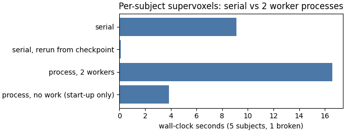

Note
Go to the end to download the full example code.
Atomic components on execution backends#
Background. Study never loops over patients itself. It hands
each subject-level step to an execution backend, which calls the step
once per subject and returns one result slot per subject. The backends
are public, so the same machinery runs any per-subject function you
write from HABIT’s atomic components: backend.map(function, cohort).
Purpose. You will write one per-subject function from three atomic components (voxel features, subject-level normalization, 30 k-means supervoxels) and run it over four demo patients plus one deliberately broken copy. You will:
run it with
SerialBackend().map(...)and see the broken copy isolated in its own result slot while the others succeed;rerun it from a
CheckpointStoreso finished subjects are loaded, not recomputed;run the same components in two worker processes and check that the supervoxel maps equal the serial ones voxel for voxel;
measure what the worker processes cost on this small cohort.
When to use. When you build your own per-subject step (a custom
feature, a QC check, a MONAI transform chain around HABIT components)
and want HABIT’s failure isolation, checkpoints and worker processes
without writing a HabitatSpec.
Key terms. Full definitions are on Concepts.
per-subject function – any callable that takes ONE
Subjectand returns one result. It must not depend on other subjects.SubjectResult – the slot a backend returns for each subject:
subject_id,value(the result, orNone),error(the captured exception, orNone) andfrom_cache(loaded from a checkpoint instead of computed).SerialBackend – one subject after another in this Python process, in input order.
process backend –
backend_from_policy(RunPolicy(backend="process"))returns aProcessPoolBackend: subjects run in worker processes and results arrive in completion order.checkpoint – each finished subject stored on disk under a key, so a rerun with the same store skips it.
The analysis definition is the first four stages of the two-step
definition used on Two-step habitats with a Spec:
extract (raw intensities of the four DCE phases inside ROI LAP),
preprocess (winsorize 1 % at each end, per subject), preprocess2
(min-max to 0..1, per subject) and partition (k-means, 30
supervoxels, seed 0). Pooling, cohort binning, the habitat fit and the
habitat features are cohort-level or come later; they are on
Two-step habitats from atomic components.
Note
A process pool sends the function to each worker by name: the
worker re-imports the module the function was defined in. On Windows
(spawn) that works when the function lives in a .py file the
worker can import – your own module (from my_steps import
supervoxels_of_one_subject) or a script started with python
page.py. It does not work for a function typed in a Jupyter
notebook or in this rendered page, because the worker cannot import
those. The process cell below therefore sends HABIT’s own
composition of the same three components (SubjectPipeline(...).units),
which every worker can import, and checks it against the serial run
of your function.
On Windows a process pool must start under if __name__ == "__main__":
(each worker re-imports the main file), so every cell that uses the
cohort is written that way and can be copied as is.
Load the cohort and build the components#
The three components are the Python twins of the first four stages of
the two-step spec. They are built at module level (outside the
__main__ guard): building them reads no data, and a function that
uses them can then be moved into your own module unchanged.
sphinx_gallery_thumbnail_number = 1
import dataclasses
import operator
import tempfile
import time
from pathlib import Path
import matplotlib.pyplot as plt
import numpy as np
from habit.contracts import Cohort, Subject, Supervoxelization, cohort_from_directory
from habit.datasets import fetch_demo
from habit.execution import CheckpointStore, SerialBackend, backend_from_policy
from habit.feature_preprocessing import ZScoreScaling, SubjectPreprocessingChain, Winsorizing
from habit.pipeline import SubjectPipeline
from habit.spec import RunPolicy
from habit.supervoxel import KMeansSupervoxelizer
from habit.voxel_features import RawVoxelFeatures
MODALITIES = ("pre_contrast", "LAP", "PVP", "delay_3min")
ROI = "LAP"
SEED = 0
# extract: one intensity column per DCE phase, voxels inside the ROI.
extractor = RawVoxelFeatures(modalities=list(MODALITIES), roi=ROI)
# preprocess + preprocess2 (subject-level): each patient is clipped and
# rescaled with its own statistics, so no information crosses subjects.
subject_chain = SubjectPreprocessingChain([Winsorizing(winsor_limits=(0.01, 0.01)), ZScoreScaling()])
# partition: 30 k-means supervoxels per tumour, seeded so every run and
# every worker draws the same supervoxel borders.
supervoxelizer = KMeansSupervoxelizer(n_supervoxels=30)
supervoxelizer.set_random_state(SEED)
# Change DATA / MODALITIES / ROI to your preprocessed layout.
# The guard keeps a spawned worker from loading the cohort again.
if __name__ == "__main__":
DATA = fetch_demo()
cohort = cohort_from_directory(DATA, modalities=MODALITIES, roi=ROI)
# The first four demo patients keep the page short; subj005 has the
# largest lesion (80 084 ROI voxels) and would dominate the run time.
cohort = cohort[:4]
print(f"Cohort: {list(cohort.subject_ids)}")
HABIT demo data (cached)
DATA (preprocessed root): C:\Users\dongm\.habit_data\demo-data-v1\preprocessed
On-disk inventory of this folder:
subjects (5): subj001, subj002, subj003, subj004, subj005
image series: LAP, PVP, delay_3min, pre_contrast
mask keys: LAP, PVP, delay_3min, pre_contrast
example image: images/subj001/delay_3min/WATER__BH_Ax_LAVA_Flex_3min_Series0012.nrrd
example mask: masks/subj001/delay_3min/WATER__BH_Ax_LAVA_Flex_10min_Series0017_mask.nrrd
Your own data must use the same folder tree (change IDs / series names):
DATA/
images/<subject_id>/<modality>/<one image file>
masks/<subject_id>/<roi>/<one mask file>
Then load it with the same call the demos use:
cohort = cohort_from_directory(DATA, modalities=("LAP",), roi="LAP")
Swap DATA / modalities / roi to match your tree. Mask key is often the
same as one image series (here LAP).
Cohort: ['subj001', 'subj002', 'subj003', 'subj004']
The per-subject function#
One subject in, one Supervoxelization out (the supervoxel label
map plus one mean-feature row per supervoxel). This is exactly what
the cohort-level pooling step needs from each subject, so its output
can go straight into pd.concat + a habitat fitter
(Two-step habitats from atomic components).
def supervoxels_of_one_subject(subject: Subject) -> Supervoxelization:
"""
Extract, normalize and supervoxelize one subject.
Args:
subject: One patient with the four DCE phases and the ROI mask.
Returns:
The subject's 30-supervoxel partition with mean features.
"""
# Voxel field: one row per ROI voxel, one column per phase. A missing
# modality raises here (KeyError), which is what the backend isolates.
field = extractor(subject)
# Replace the feature table with the normalized one and record, in the
# provenance, which chain produced it.
field = field.with_feature_frame(
subject_chain(field.feature_frame()),
produced_by="feature_preprocessing.subject.voxel",
spec_fingerprint=subject_chain.spec.fingerprint(),
)
return supervoxelizer(field)
Serial backend, with one broken subject#
A copy of the fourth demo patient is added without its portal-venous
series, so extract cannot find PVP for it. With
on_subject_failure="continue" (the default) the backend catches
that exception, puts it in the copy’s SubjectResult.error and
moves on; the other subjects are unaffected.
checkpoint=store also writes every finished subject (and the
failure) to a checkpoint folder; the next cell reruns from it. The
store is a fresh temporary folder so this run really starts from
nothing; in a study you would point it at a folder you keep.
if __name__ == "__main__":
source = cohort[3]
broken = dataclasses.replace(
source,
subject_id=f"{source.subject_id}_no_PVP",
images={name: ref for name, ref in source.images.items() if name != "PVP"},
)
subjects = Cohort(list(cohort) + [broken], name="five_plus_one_broken")
store = CheckpointStore(Path(tempfile.mkdtemp(prefix="habit_atomic_ckpt_")))
backend = SerialBackend(on_subject_failure="continue")
timings: dict[str, float] = {}
start = time.perf_counter()
# map() is lazy (a generator); list() runs it to the end.
serial_results = list(backend.map(supervoxels_of_one_subject, subjects, checkpoint=store))
timings["serial"] = time.perf_counter() - start
for one in serial_results:
if one.error is None:
n_units = one.value.feature_frame().shape[0]
print(f"{one.subject_id}: ok, {n_units} supervoxels")
else:
print(f"{one.subject_id}: FAILED, {type(one.error).__name__}: {one.error}")
print(f"serial: {timings['serial']:.1f} s")
# With fail_fast the first failure is raised instead of recorded.
try:
list(SerialBackend(on_subject_failure="fail_fast").map(supervoxels_of_one_subject, [broken]))
except KeyError as error:
print("fail_fast stopped at:", broken.subject_id, "->", type(error).__name__)
subj001: ok, 30 supervoxels
subj002: ok, 30 supervoxels
subj003: ok, 30 supervoxels
subj004: ok, 30 supervoxels
subj004_no_PVP: FAILED, KeyError: "Subject 'subj004_no_PVP' has no modality 'PVP'. Available: ['LAP', 'delay_3min', 'pre_contrast']."
serial: 9.1 s
fail_fast stopped at: subj004_no_PVP -> KeyError
Rerun from a checkpoint store#
The serial run above wrote every finished subject to store; a
second call with the same store loads them (from_cache=True)
instead of recomputing. The failure is stored too, so the rerun does
not try the broken copy again unless the backend is built with
retry_failed_subjects=True.
A plain function has no cache_key method, so the backend keys it
by the callable’s type and the subject id (printed below). The key
does not name your function or its parameters: keep one store folder
per function and per parameter set, or old results are reused for a
different computation. HABIT’s own components add their spec
fingerprint to the key, so a changed parameter is recomputed.
if __name__ == "__main__":
start = time.perf_counter()
results = list(backend.map(supervoxels_of_one_subject, subjects, checkpoint=store))
timings["serial, rerun from checkpoint"] = time.perf_counter() - start
cached = sum(one.from_cache for one in results)
print(f"rerun: {timings['serial, rerun from checkpoint']:.1f} s, {cached} of {len(results)} results from the checkpoint")
print(f"broken copy on rerun: {type(results[-1].error).__name__}: {results[-1].error}")
print("stored failure keys:", store.failed_keys())
same = all(
np.array_equal(a.value.label_array, b.value.label_array)
for a, b in zip(serial_results, results)
if a.error is None
)
print(f"checkpoint rerun == serial: {same}")
rerun: 0.1 s, 5 of 5 results from the checkpoint
broken copy on rerun: HABITAPIError: Subject has a recorded checkpoint failure: KeyError: "Subject 'subj004_no_PVP' has no modality 'PVP'. Available: ['LAP', 'delay_3min', 'pre_contrast']."
stored failure keys: ('builtins.function:subj004_no_PVP',)
checkpoint rerun == serial: True
The same components in worker processes#
RunPolicy collects the scheduling settings and
backend_from_policy turns them into a backend:
backend="process", workers=2– two worker processes.on_subject_failure="continue"– a failure is recorded, not raised.auto_retry_rounds=0– the process backend normally retries a failed subject twice (worth it for a worker that ran out of memory); a missing file will not appear on retry, so retries are switched off.
The function sent to the workers is SubjectPipeline(...).units:
HABIT’s composition of the same three component objects, which a
worker can import (see the note at the top). units runs extract ->
subject preprocessing -> supervoxels and stops before habitat
assignment. Results arrive in completion order, so they are matched to
the serial run by subject_id.
if __name__ == "__main__":
pipeline = SubjectPipeline(
voxel_feature_extractor=extractor,
supervoxelizer=supervoxelizer,
habitat_assigner=None,
voxel_feature_preprocessor=subject_chain,
)
policy = RunPolicy(backend="process", workers=2, on_subject_failure="continue", auto_retry_rounds=0)
process_backend = backend_from_policy(policy)
print(type(process_backend).__name__, "workers:", process_backend.workers)
start = time.perf_counter()
process_results = {one.subject_id: one for one in process_backend.map(pipeline.units, subjects)}
timings["process, 2 workers"] = time.perf_counter() - start
print(f"process: {timings['process, 2 workers']:.1f} s")
for one in serial_results:
other = process_results[one.subject_id]
if one.error is None:
same = np.array_equal(one.value.label_array, other.value.label_array)
print(f"{one.subject_id}: process == serial: {same}")
else:
print(f"{one.subject_id}: failed in both: {other.error is not None} ({type(other.error).__name__})")
ProcessPoolBackend workers: 2
process: 16.6 s
subj001: process == serial: True
subj002: process == serial: True
subj003: process == serial: True
subj004: process == serial: True
subj004_no_PVP: failed in both: True (KeyError)
What the worker processes cost here#
To separate the cost of the process machinery from the work itself,
the same backend maps operator.attrgetter("subject_id") – a
function that does no image work at all – over the same subjects.
Its time is start-up only: on Windows each worker is a new Python
interpreter that imports HABIT and its dependencies (spawn), and
each subject is pickled and sent to a worker.
A second cost is threading. The serial run lets numpy / scikit-learn
use every CPU core for k-means. Each worker is capped to ONE
BLAS/OpenMP thread (environment variable HABIT_WORKER_THREADS,
default 1) so that workers x threads cannot oversubscribe the
machine. Two single-threaded workers can therefore be slower than one
multi-threaded serial run. Workers pay off when there are many more
subjects than workers and the per-subject work does not already use
all cores.
if __name__ == "__main__":
start = time.perf_counter()
ids = sorted(one.value for one in process_backend.map(operator.attrgetter("subject_id"), subjects))
timings["process, no work (start-up only)"] = time.perf_counter() - start
print("returned ids:", ids)
for name, seconds in timings.items():
print(f"{name}: {seconds:.1f} s")
Path("out").mkdir(exist_ok=True)
fig, ax = plt.subplots(figsize=(6.8, 2.6), constrained_layout=True)
ax.barh(list(timings), list(timings.values()), color="#4C78A8")
ax.invert_yaxis()
ax.set_xlabel(f"wall-clock seconds ({len(subjects)} subjects, 1 broken)")
ax.set_title("Per-subject supervoxels: serial vs 2 worker processes")
fig.savefig("out/atomic_backends_timing.png", dpi=150, bbox_inches="tight")
plt.show()

returned ids: ['subj001', 'subj002', 'subj003', 'subj004', 'subj004_no_PVP']
serial: 9.1 s
serial, rerun from checkpoint: 0.1 s
process, 2 workers: 16.6 s
process, no work (start-up only): 3.8 s
How to read the result#
In the reference run of this page (Windows, 2 workers):
the four demo patients each got 30 supervoxels; the copy without
PVPfailed withKeyErrorin its ownSubjectResultand did not stop the others;fail_fastraised the same error;the checkpoint rerun loaded all five results (four successes and the recorded failure) in under a second, versus about 24 s for the first serial run, and printed
checkpoint rerun == serial: True;every successful subject printed
process == serial: True: the worker processes produce the same supervoxel maps as the serial run;the two-worker run was slower than serial here (about 70 s versus 24 s). The no-work map alone took about 14 s, so start-up is part of it; the rest is two single-threaded workers against one multi-threaded serial run. The exact seconds are printed above; they depend on the machine and on what else it is running.
Scheduling changes speed and failure handling only. The supervoxels, and everything computed from them, are the same.
Where to go next#
Pool these supervoxels, fit the habitat model and assign labels: Two-step habitats from atomic components.
The whole spec on a backend, with resume, timeouts and timing: Atomic components on execution backends.
Put HABIT steps inside your own pipeline: HABIT inside your own pipeline.
Execution settings in detail: Parallel execution and fault tolerance.
Total running time of the script: (0 minutes 30.871 seconds)